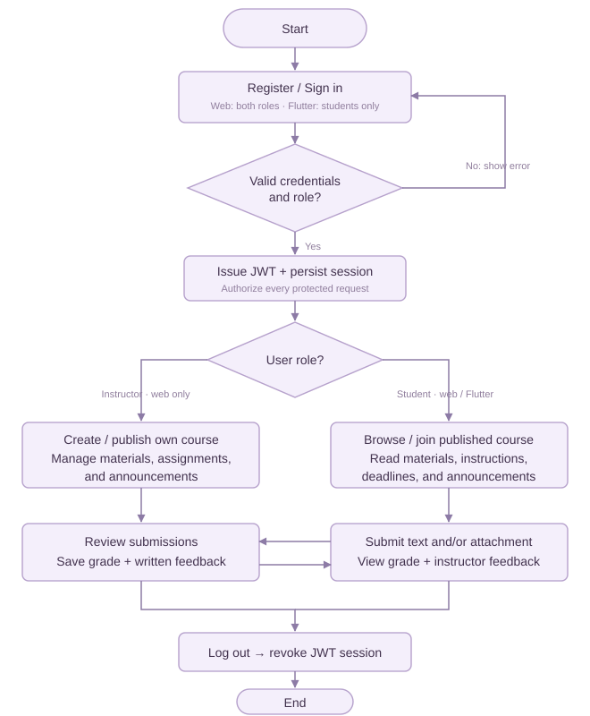

[Institution Name]
[Program / Course / Section]
A MERN Learning Management System with a Flutter Student Application
Chapter 1
Introduction
Prepared by
[Student Names]
15 October 2026
Replace bracketed institution, program, and student information before submission.
Teaching and learning involve more than distributing lessons. Students need a dependable way to locate resources, understand deadlines, submit work, and act on feedback. Instructors need a coherent place to organize content, communicate with classes, and assess student submissions. When these activities are spread across multiple messaging threads and unrelated storage locations, both groups must spend additional time finding information and confirming the status of work.
Knowhere to Grow addresses this coordination problem through a web application for students, instructors, and administrators and a Flutter application for students. Both applications communicate with one backend and one MongoDB database. This shared structure allows a submission created on a phone to be reviewed on the instructor’s web dashboard and its grade to be retrieved through either student interface.
The project is intended for an academic setting in which instructors manage individual courses and students participate in enrolled classes. It provides a structured alternative to fragmented course communication without attempting to replace every institutional information system.
The web application uses MongoDB, Express.js, React.js, and Node.js. React Router manages navigation; React hooks and context manage interface and authentication state; Axios connects the interface to REST endpoints; and Bootstrap supports forms, controls, and responsive presentation. The Flutter application consumes the same API using student sessions.
This project demonstrates course concepts through a complete academic workflow: email-verified registration, password recovery, role-based access, course enrollment, content management, assignment submission, assessment, and feedback. Security checks are applied on the server, where requests are validated and permissions are verified.
The purpose of Knowhere to Grow is to centralize everyday course activities in an accessible system that supports both desktop and mobile learning. It is designed to make academic tasks easier to locate, their status easier to understand, and feedback easier to follow.
Students use the web application or Flutter app to register and sign in, browse published courses, join a class, view learning resources, read announcements, review assignment instructions and deadlines, submit written responses and attachments, and check grades with instructor comments. Students can also update their profiles and passwords and securely sign out.
Instructors use the web application to create and publish courses, upload and maintain learning materials, create assignments, configure deadlines and late-submission policies, view enrolled students, review submitted work, save grades and written feedback, and post announcements. Instructors may only manage courses that they own.
The backend exposes REST endpoints for these operations and stores records in MongoDB. Files are stored through GridFS so that the academic records and attachments use the same database service. The backend grants access to learning content only to the course owner and enrolled students, and protects individual student work from access by other students.
Authentication uses signed JSON Web Tokens associated with persisted sessions. Public signup requires email OTP. Password recovery verifies an emailed code before updating the password and revoking sessions. SMTP sender configuration is required for live mail. Web tokens are delivered in HTTP-only cookies, while mobile student tokens are stored using platform secure storage. Logging out revokes the corresponding server session; changing a password revokes other sessions.
The design uses a consistent learning workspace, visible task states, search and pagination, responsive layouts, and explicit loading and error states. Mobile navigation focuses on home, courses, assignments and grades, announcements, and profile management.
To design and develop a secure learning management system using the MERN stack, with a connected Flutter student application, that centralizes course resources, assignment submission, assessment, and academic communication.
The system supports three web roles: student, instructor, and administrator. Only students may use Flutter; instructor and administrator mobile authentication is rejected by the backend.
The student scope includes registration, authentication, a responsive dashboard, published-course discovery, self-enrollment, enrolled-course access, learning resource download, assignment instructions and deadlines, submission with text and/or a file, grades and feedback, quizzes and permitted attempt review, lecture/course progress, an in-app inbox, profile editing, password changes, and logout.
The instructor scope includes invitation-protected registration, authentication, dashboard statistics, ownership-protected course creation and publication, learning material management, assignment management, submission review, grading with written feedback, quizzes and questions, student progress and score tracking, enrolled-student viewing, announcements, profile editing, and logout.
The system stores academic records and sessions in MongoDB, and attachments in GridFS. Input validation, role checks, ownership and enrollment checks, request limits, and protected file access are part of the implementation. The web interface adapts to phone, tablet, and desktop dimensions.
Files are limited to 3 MB and approved document, image, archive, text, or video formats. Late submissions depend on an instructor-defined setting. Students may replace ungraded work; graded work is locked. Grades must fall between zero and the assignment’s maximum points and include written feedback.
Course deletion archives a course and blocks access while retaining records for recovery. Assignment deletion permanently removes associated submissions, grades, and attachments. The displayed overall grade summarizes graded assignment points; it does not implement institutional grading policies.
Administrators use a web-only workspace to oversee school accounts, courses, learning activity, and administrative changes. The overview summarizes users, active courses, enrollments, materials, assignments, announcements, and graded or pending submissions. Reports add activity graphs, date filters, weighted scores, and daily/course CSV exports using Philippine calendar dates.
The user directory supports search, role/status filters, pagination, account creation, profile editing, and suspension or reactivation. Suspension revokes existing web and mobile sessions while retaining teaching records. Role changes are blocked for accounts with course, enrollment, or submission history, and administrator accounts are protected from directory suspension or demotion.
Administrators generate, add, edit, copy, and deactivate unused instructor invitations. Each code registers one instructor: a transaction creates the account and consumes the code. Used codes disappear from the available list, lose their plaintext value, and become immutable history. Failed registration preserves the code. Replacing or deactivating unused codes blocks access without suspending existing instructors. The environment code imports once; restarts never restore consumed codes.
The course directory supports inspection, metadata editing, archival, restoration, and catalog publication control. Enrollment monitoring, targeted school announcements, and current learning-progress reports support school administration. Instructors retain responsibility for their learning content and grades. Recent activity previews have explicit limits, while record counts cover the course history. A searchable, paginated activity log records the actor, target, action, and time without recording passwords or invitation-code values.
Administrator accounts are created privately through a server command. Their initial random passwords are written to a local credentials file excluded from version control, deployment uploads, and source packages. Administrators use the ordinary web sign-in page; there is no public administrator signup or Flutter administrator workspace.
The project does not include payment processing, library book circulation, live video classes, attendance tracking, institutional enrollment synchronization, third-party single sign-on, push notifications. Administrator provisioning requires trusted server access. Public registration cannot create administrator accounts.
Enrollment is self-service for published courses. The system does not implement approval queues, prerequisite enforcement, course capacity limits, or semester-based registration rules. Unpublishing a course stops new enrollment while retaining access for students who already joined.
The Flutter app requires network access. It does not queue submissions offline or synchronize edits made without a connection. Previously downloaded files may remain in the device’s private app documents after logout. An installed file viewer is required to open supported attachments.
Basic file-content validation is implemented; antivirus scanning and advanced document analysis are outside the project scope. Production use requires HTTPS, managed secrets, appropriate database network restrictions, backups, and operational monitoring.
Web browser workflows, server integration behavior, Flutter static analysis, and Flutter widget/API tests have been verified. Android bundle compilation was attempted but could not proceed because the development machine lacks the Android SDK. An Android APK, emulator or physical-device run, platform file-picker/download smoke test, and iOS build remain unverified. iOS compilation requires macOS, Xcode, and signing.
These boundaries distinguish the implemented academic functionality from platform setup and operational responsibilities that must be completed before public deployment or a device-based final demonstration.

Figure 1. Role-based learning workflow using a shared Express API and MongoDB database.
Students and instructors register or sign in. Instructor registration requires an unused, active code from the admin-managed list; successful signup consumes it permanently. Administrators are privately provisioned and use the web login. Flutter accepts only students.
Successful authentication creates a persisted session and a signed JWT. Every protected request checks the session, role, and account status. Course operations also verify ownership or enrollment; submitted work is private to its student and course instructor.
Instructors manage courses, materials, assignments, quizzes, announcements, grading, and learning progress. Students enroll, retrieve resources, submit work, take quizzes, mark lectures complete, read their inbox, and review grades through either student client.
Administrators manage accounts, course records and invitation codes, monitor enrollments and progress, post school announcements, and review system activity. Suspension revokes account sessions; deactivating an invitation blocks new registrations without changing existing instructor accounts.
Logout revokes the corresponding session. Password changes update the hash and revoke other sessions. These checks apply on the server and do not depend solely on visible navigation.
Express: expressjs.com/en/advanced/best-practice-security/
MongoDB Node driver: mongodb.com/docs/drivers/node/current/
React: react.dev/learn
Flutter: docs.flutter.dev